Interface Builder
Interface builder is the tool within Xcode for creating a User Interface via a GUI.
History
Interface Builder has been around since 1988, in 2008 a special iPhone version of Interface Builder was released to allow for the building iPhone interfaces. As of Xcode 4 Interface Builder became integrated into Xcode, before this Interface Builder had been its own application.
Sometimes Interface Buildier will be refered to as IB. In some cases you may find Interface Builder files called .xib or .nib, this stands for NeXT interterface builder dating back to the NeXTSTEP company Steve Jobs created after leaving Apple.
Interface Builder had been used by Tim Berners-Lee to create the WorldWideWeb Browser back in 1990.
Storyboards
In previous versions of Xcode, a .nib files would be required for each View Controller, As of Xcode 4.2 Storyboards have been available.
One of the notable advantages of Storyboards is Segues, Segues allow for linking of View Controllers to other View Controllers within Interface Builders GUI. Previously linking View Controllers would have to be done via code, it is worth noting that you can still link View Controllers together with Code.
Views
When creating an Interface in Interface Builder, most of the time a View will be used. A View inherits or directly implements the UIView Class. A View on the Interface Builder is a rectangular area the handles drawing and touch/gesture events.
Most Objects in the Object library inherit from UIView, e.g. Button, TextField, Slider, ...
Views can and are typically nested, i.e. a View sits inside another View. The relationship between nested Views are described as a SuperView and a SubView, the Super being the outer and the Sub being the Inner.
Auto Layout
Auto Layout is a dynamic way of describing layouts of Views. This can be particularly helpful for designing interfaces that work well on all sizes of the iPhone, with Auto Layout the same described layout can be made to run well on a 4 inch screen threw to a 5.8 inch screen.
Auto Layout is a system of Constraints defining size and position of Views within their relative SuperView.
Getting Started with Auto Layout
Within Interface Builder, the toolbar at the bottom of the editor is where the Auto Layout Menus and Options can be found.
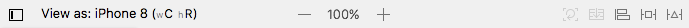
On the left side of the toolbar the device that the editor is currently displaying on the editor, you can change the device to see how the interface will look for different devices. Clicking on the device brings up the options for device and Orientation of the device.
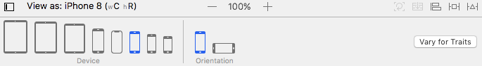
Next to the iPhone device is the Size Class of the selected device in its orientation, for the iPhone 8 in portrait it is wC hR. This means, compact width and regular height. Changing the device to landscape results in the height becoming compact. Size classes can be used to alter the constraints applied to the Views.
On the left side of the toolbar, a collection of menu's and buttons can be found, from left to right:
- Update Frames, updates the view displayed on the editor with the current constraints applied
- Embed in stack, this will place the selected views inside a Stack View
- Alignment constraints
- Height and Position constraints
- Resolve auto layout issues button
Height and Position Constraints
Starting with Height and Position constrains or "A new layout constraint".
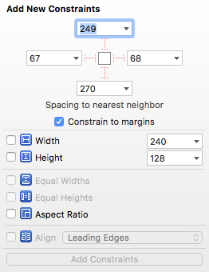
A new constraint can have a defined height and width, spacing to nearest neighbour and some additional constraints to be discussed later.
Alignment Constraints
Alignment constraints allow for positioning views aligned with one another.
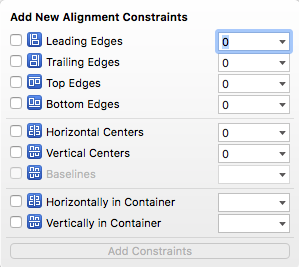
To activate this option, you need to command + click at least two Views from the left side toolbar.
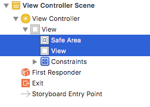
Safe Area
In Xcode 9 the Safe Area Layout Guide is available, think of this as a set of margins in which it is safe to draw content within.
To further illustrate, here is a View Controller root View with a background of Green and a subview that has been given a 0 point positioning to the layout guide edges.

The Subview has a black background, here is the the layout shown in Portrait
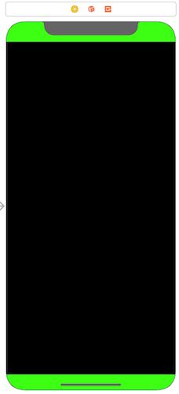
As shown, the green colour around the edges of the back Subview indicates the Safe Layout Guide, here it the same View in Landscape
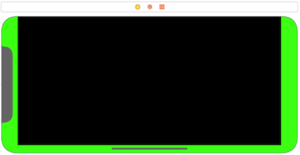
The safe area on the iPhone X does not encroach on home button and the notch, on the iPhone 8 the safe area is aligned to the edge of the device on the left, bottom and right sides. On the top side when the Top Bar is present, the safe area will be below this.
The safe area will also change when a Bottom Tab Bar or Navigation Bar is present.
Aligning to Centres of Views
To centre a View within its Superview, the alignment constraint can be used. This constrain in located within the alignment constraint menu.
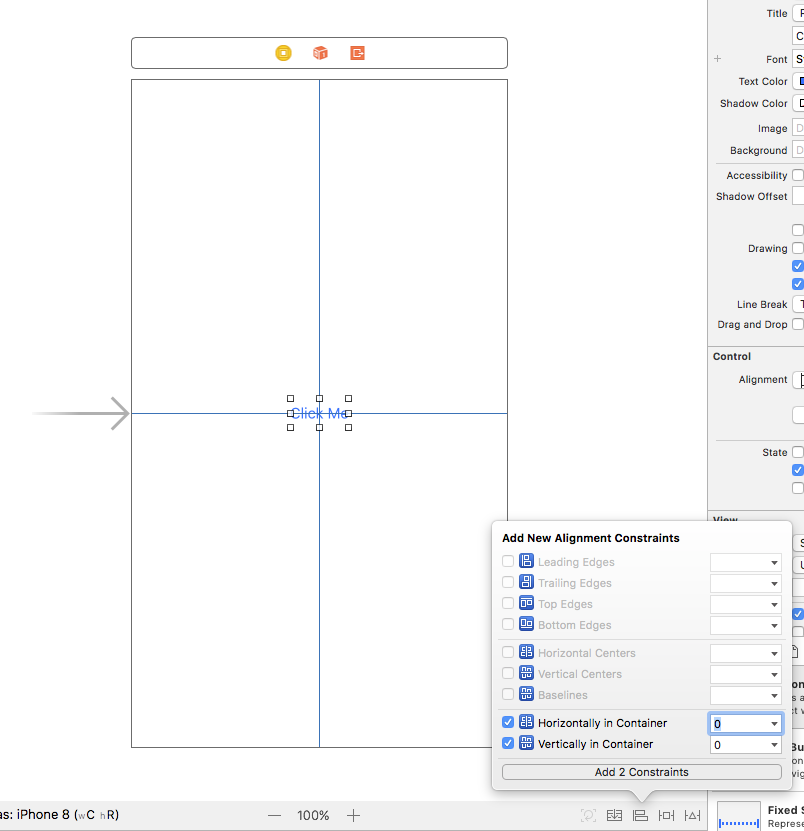
When the device is rotated to landscape, the button will still be in the middle of the Superview.
Relative Heights and Widths
A height or width can be set to relate to another views height or width, to do this both views need to be selected in the left toolbar and a constraint applied in the Constraints Menu.
In this example I have a View inside a the root View, the Subview is called GeeenView
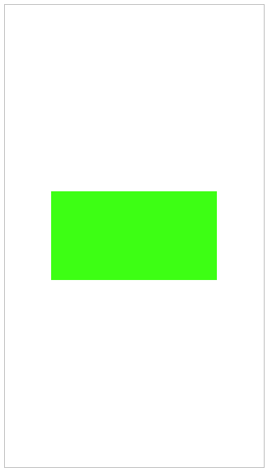
In the example the GreenView will have the same width as the root View and half the height of the root View. The View will be zero aligned to the top and left Safe Area.
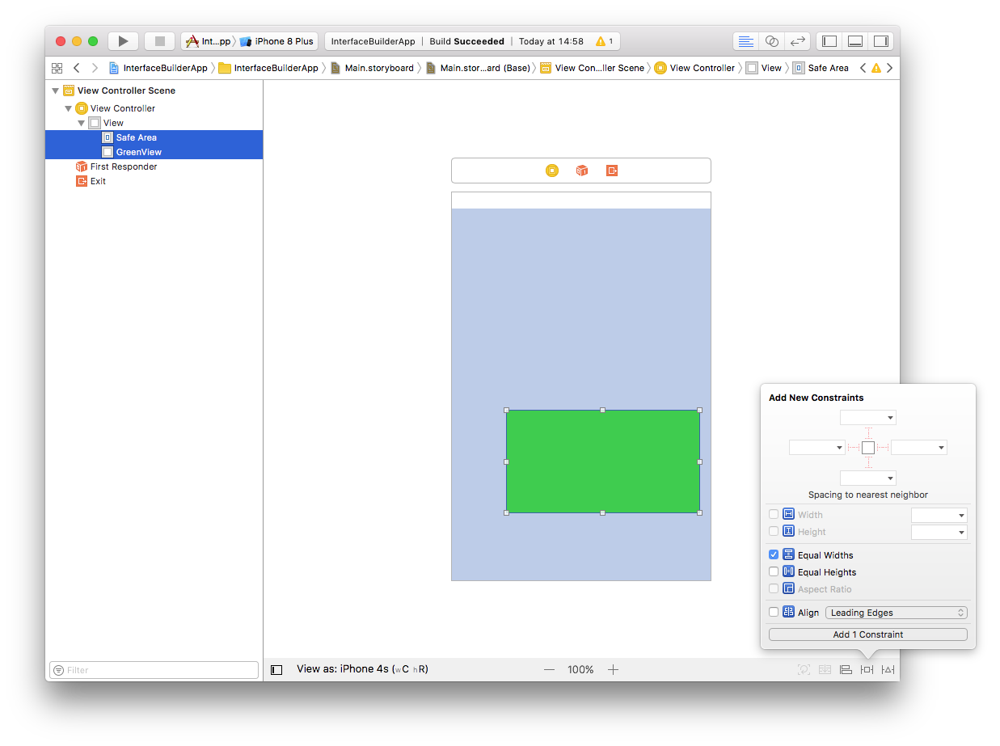
Take care to select both the Safe Area and GreenView is selected. Click Add 1 Constraint To Add the Constraint.
To set the height as half the width of the safe area, repeat the width constraint but for Equal Heights, then in the right side drawer under the Attribute Inspector set the Multiplier to be 0.5
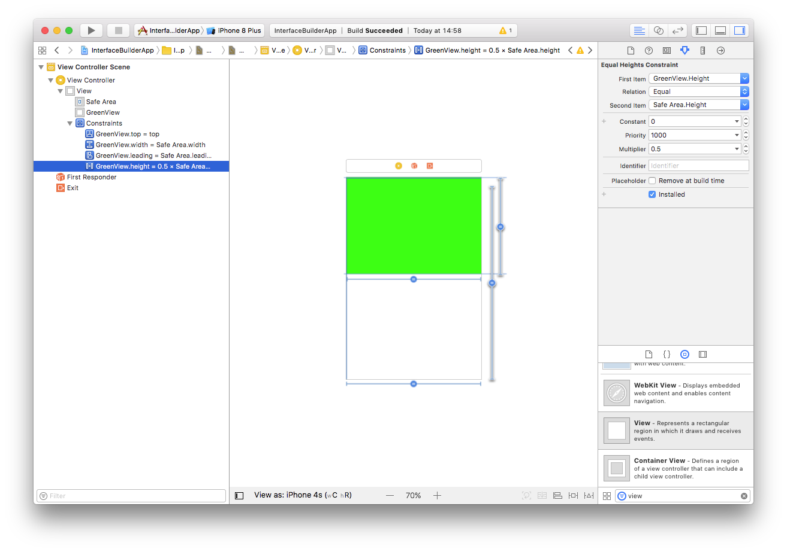
Task 1
Create a new Projected Called LayoutApp1, implement the above example about applying all constraints However have your view aligned to the bottom of the safe area. Test to make sure that the project Works in Landscape and Portrait.
Example of the completed view:
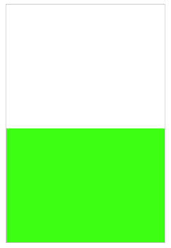
Size Class Variation
In some cases constraints may differ between size classes, for example in landscape a constraint may not be needed or should differ from than in landscape.
In this example, we shall work with the last task. In Portrait the height should be equal to half, however in Landscape the height should be equal.
This can be achieved by adding a size class variation to the Equal Height Constraint. In the left side toolbar click on the GreenView.height = 0.5 × Safe Area.height constraint, in the right side drawer under the Attribute inspector the constraint is Installed, unticking this option uninstalls the constraint. To the left side is a + button, Clicking on the button brings up the option to add a Variation based on the height, width and Gamut. Selecting Width: Any, Height: Regular will introduce a variation.
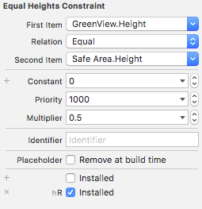
Notice the constraint has been uninstalled and Installed for hR, this means the constraint will any apply to regular heights.
On the iPhone, All devices in Portrait have the Size class of hR wC and in landscape hC wC.
Setting the height to be equal in landscape can be achieved by having two constraints with variations.
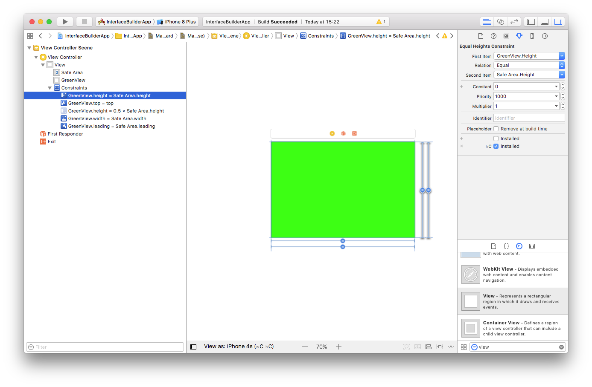
Task 2
Create a new project called LayoutApp2, implement the above example about applying all constraints However in landscape have the GreenView width to be half Safe Area and in portrait have the width to be equal. The GreenView should be Zero Aligned on the top, left and bottom to the safe area. Test to make sure that the project Works in Landscape and Portrait.
Stack Views
Stack views allows for creating more complicated layouts quicker and easier.
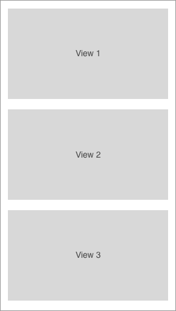
Consider the above layout, to draw this layout using Alignment and Equal Height Constraints would require the following constraints
- Equal Heights for each view
- A view with a relative height to the Safe Area
- Width Constraint for each View
- Leading Each Constraint
- Vertical Space Constraints for each view
- any probably some more...
If after creating these constraints another view needed to be added to the layout, it would not be simple, this is where Stack Views come in.
Stack Views have the following properties:
Alignment
How each view is aligned to each edge
Axis
How the views within the Stack View are Stacked, this can be horizontally (side by side) or vertically (on top of each other)
Spacing
How much space is between each of the views
Distribution
How each View will fill the available space within the Stack View
To create the above example, three Views will be placed onto a root view, theses sub Views are called GreenView, RedView and BlueView.
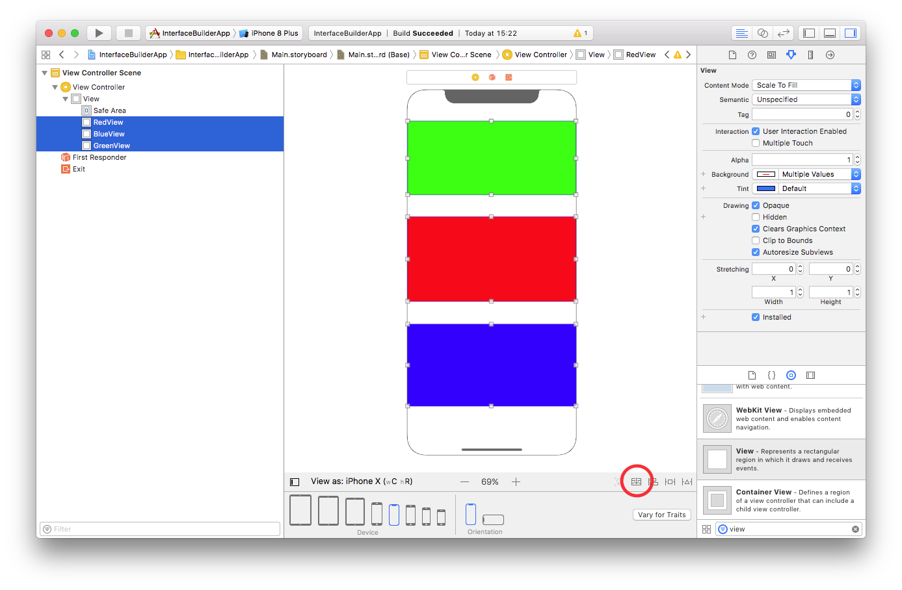
To place the views within a Stack View, on the bottom toolbar click on the circled button in the image above, the three views are now sub Views of a Stack View.
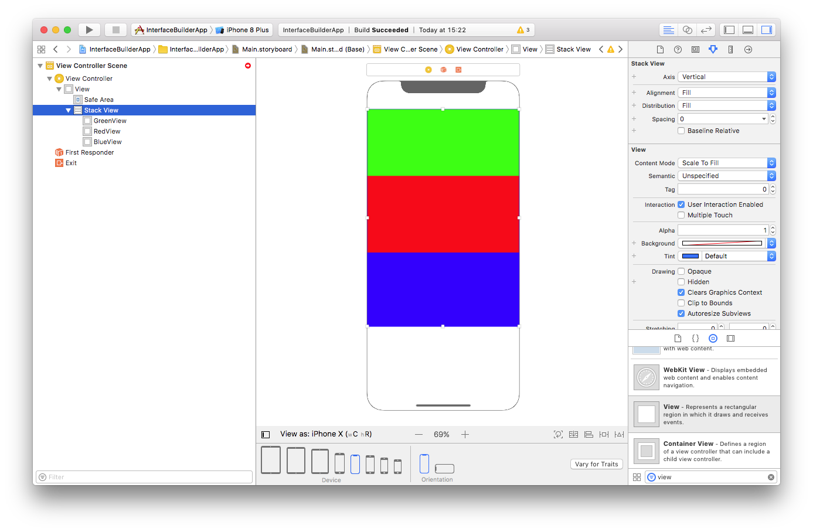
In the Attribute inspector of the Stack View you can see the axis, alignment, distribution and spacing properties.
Task 3
Create a new project called LayoutApp3, implement the above example, in addition implement
Zero Top, Bottom, Leading and trailing edges on the StackView to the Safe Area
Distribute the views equally so that each views height is equal
Introduce some spacing between the views
Add a Variation on the Axis so that in landscape the views are Horizontal
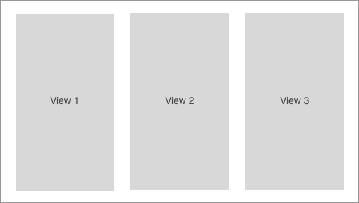
Test to make sure that the project Works in Landscape and Portrait, and respect the safe area.